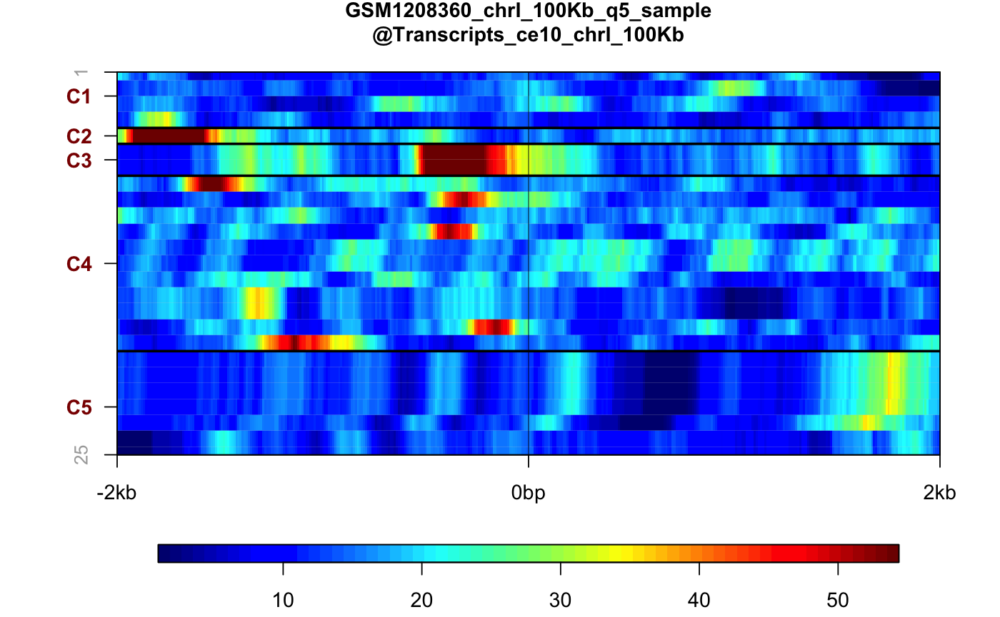
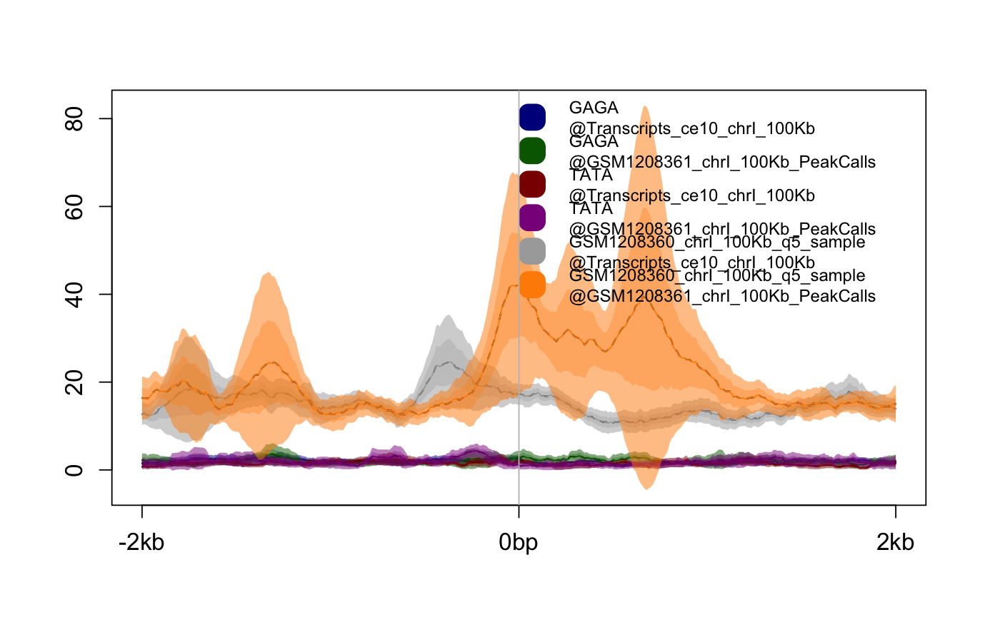
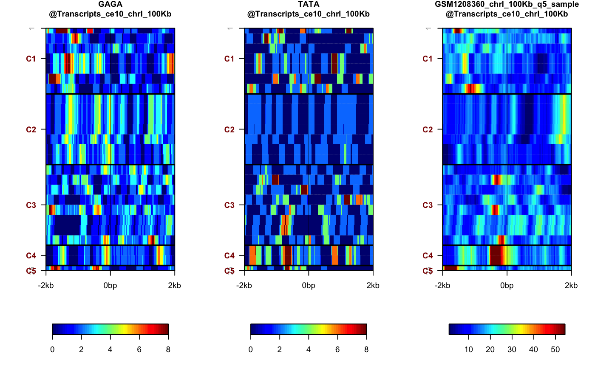

Process genomic signal
Function to process genomic signal from tracks and/or motif data, calculate statistics. This function should be used as the entry point to the SeqPlots pipeline and followed by plotting function(s).
getPlotSetArray(tracks, features, refgenome, bin = 10L, rm0 = FALSE, ignore_strand = FALSE, xmin = 2000L, xmax = 2000L, xanchored = 1000L, type = "pf", add_heatmap = TRUE, verbose = FALSE, stat = "mean", lvl1m = message, lvl2m = message)
Arguments
| tracks | Character vector or list of BigWig track paths. For motif
density plots |
|---|---|
| features | Character vector or list containing feature file paths (BED or GFF). |
| refgenome | The UCSC code of reference genome, e.g. 'hg19' for Homo sapiens (see details) |
| bin | Binning window size in base pairs, defaults to 1L |
| rm0 | Remove zeros from mean/error estimate calculation, 0 in track file will be treated as missing data, defaults to FALSE |
| ignore_strand | If TRUE the directionality is ignored, that is all features' strands, regardless of annotation in GFF/BED file, are treated as undetermined ("*"), defaults to FALSE |
| xmin | Upstream calculation distance in base pairs, defaults to 200L |
| xmax | Downstream calculation distance in base pairs, defaults to 2000L |
| xanchored | Anchored, feature body pseudo length in base pairs. The features will be extended or shrunk using linear approximation. Used only if /codetype="af", defaults to 1000L |
| type | The type of the calculation, "pf" for point features (default), "mf" for midpoint features, "ef" for endpoint features and "af" for anchored features, see details |
| add_heatmap | Add the heatmap data to output, must be on to plot
heatmap form output |
| verbose | Print various messages and warnings, defaults to FALSE |
| stat | If set to "median" the median is used as summarizing statistic for linear plots instead of mean |
| lvl1m | function to handle lvl 1 messages, useful when invoked
in Shiny GUI environment, defaults to |
| lvl2m | function to handle lvl 2 messages, useful when invoked
in Shiny GUI environment, defaults to |
Value
The PlotSetArray object.
Details
This function takes genomic coordinates in BED or GFF format, and extracts
the signal from track files (BigWig) and/or calculates motif density in
these regions. Then it computes the statistics required for average
and heatmap plots. Returns the PlotSetArray class,
which can be further subsisted, and used for plotting.
Modes of operation
The function operate in three modes, determined bytype parameter:
Point Features - anchor plot on the start of a feature. By default, plot will be directional if strand information is present (i.e, use start position and plot on positive strand for + strand features and use end position and plot on negative strand for minus strand features). If strand information is not present in the feature file (or if the "ignore strand" option is chosen), plot will use start position of feature and be plotted on the positive strand (see explanations). User chooses length of upstream and downstream sequence to plot.
Midpoint Features - similar to point feature, but plot is centred on the midpoint of the feature.
Endpoint Features - similar to point feature, but plot is centred on the end point (most downstream) of the feature.
Anchored Features - features are anchored at start and stop positions and given pseudo-length chosen by the user. Additionally, the user chooses the length of sequence upstream of the start and downstream of the end to plot.
Binning the track
bin numeric parameter determines the resolution of data acquisition.
The default value 10 means that 10bp intervals within the plotting range
will be summarized by calculating the mean. Higher values increases the
speed of calculation and produces smoother plots, but decreases resolution.
DNA motifs
TheMotifSetup class allows to calculate and plot the density
of any user-defined motif around the chosen genomic feature using the
reference sequence package. Motif plots can be mixed with track files'
signal plots. The MotifSetup can be initialized in following
way:
ms <- MotifSetup()
ms$addMotif("TATA", window=200L, heatmap=TRUE, revcomp=TRUE,
name=pattern)
ms$addMotif("GAGA", window=100L)$addBigWig("path/to/file.bw")
The addMotiff methods accepts following parameters:
motifThe DNA motif sequence.
windowSliding window size in base pairs [bp] - the size of the sliding window for motif calculation. The value (number of matching motifs within the window) is reported in the middle of the window, e.g. if window is set to 200bp, DNA motif is "GC" and there are 8 CpGs in first 200 bp of the chromosome the value 8 will be reported at 100th bp.
nameDisplay name - The name of the motif that will be shown in key and heatmap labels. Leave blank to use DNA motif value.
heatmapPlot heatmap or error estimates - this checkbox determines if heatmap matrix and error estimates should be calculated. If unchecked much faster algorithm will be used for motif density calculation, but only the average plot without the error estimates will be available.
revcompMatch reverse complement as well - select if reverse complement motif should be reported as well. For example the TATA motif will report both TATA and ATAT with this option selected.
Reference genomes
Therefgenome parameter determines the reference genome to be used
chromosome naming convention (e.g. chrX vs. X) and chromosome lengths.
Also for motif plots the genomic sequence is used to calculate motif
density tracks. To check which genomic packages are installed in current R
session use installed.genomes function.
available.genomes gives the list of all reference
genome packages currently supplied by BioConductor. Please refer to
BSgenome package documentation for installing and
forging new genome packages.
See also
Other plotting functions: plotAverage,
plotHeatmap, plot
Examples
# Get the paths of example files bed1 <- system.file("extdata", "Transcripts_ce10_chrI_100Kb.bed", package="seqplots") bed2 <- system.file("extdata", "GSM1208361_chrI_100Kb_PeakCalls.bed", package="seqplots") bw1 <- system.file("extdata", "GSM1208360_chrI_100Kb_q5_sample.bw", package="seqplots") #If required install C. elegans genomic package from Bioconductor if(!"BSgenome.Celegans.UCSC.ce10" %in% BSgenome::installed.genomes()) { if(.Platform$OS.type != "windows" || .Machine$sizeof.pointer != 4) { source("http://bioconductor.org/biocLite.R") biocLite("BSgenome.Celegans.UCSC.ce10") } } #Get getPlotSetArray for track and feature files #Does not work on Windows i386 (32 bit) if(.Platform$OS.type != "windows" || .Machine$sizeof.pointer != 4) { plotset1 <- getPlotSetArray(bw1, c(bed1, bed2), 'ce10') } else { load(system.file("extdata", "precalc_plotset.Rdata", package="seqplots")) }#>#>#>#>#Get getPlotSetArray for motifs, track and feature files ms <- MotifSetup() ms <- MotifSetup() ms$addMotif('GAGA')#> MotifSetup with 1 motifs/tracks.ms$addMotif('TATA')#> MotifSetup with 2 motifs/tracks.ms$addBigWig(bw1)#> MotifSetup with 3 motifs/tracks.if(.Platform$OS.type != "windows" || .Machine$sizeof.pointer != 4) { plotset2 <- getPlotSetArray(ms, c(bed1, bed2), 'ce10') }#>#>#>#>#>#>#>#>